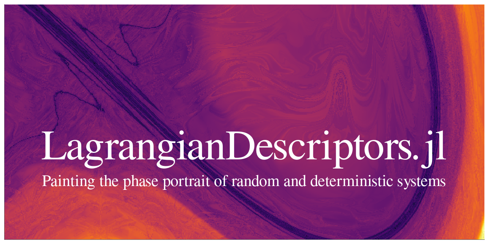

LagrangianDescriptors.jl documentation
Painting the phase portrait of deterministic and stochastic systems.

About
The dynamics of evolutionary systems can be quite intricate. The method of Lagrangian Descriptors helps to visualize the complicate behavior of such systems and make sense of it. In a recent article, Wiggins and and García-Garrido call it [a method for] painting the phase portrait (of a dynamical system) (see S. Wiggins and V. J. García-Garrido, Painting the Phase Portrait of a Dynamical System with the Computational Tool of Lagrangian Descriptors (AMS Notices, June/July 2022).
The image above, for instance, shows the dynamics of a periodically-forced Duffing equation, with a particular combination of parameters and near time $t=0$.
Example
Here is the code that generates the background of the image above, displaying some dynamic features of the Duffing equation.
using OrdinaryDiffEq, Plots
using LinearAlgebra: norm
using LagrangianDescriptors
function f!(du, u, p, t)
x, y = u
A, ω = p
du[1] = y
du[2] = x - x^3 + A * sin(ω * t)
end
u0 = [0.5, 2.2]
tspan = (0.0, 13.0)
A = 5.0; ω = 2π; p = (A, ω);
prob = ODEProblem(f!, u0, tspan, p)
M(du, u, p, t) = norm(du)
uu0 = [[x, y] for y in range(-1.5, -0.5, length=301), x in range(-0.4, 1.6, length=601)]
lagprob = LagrangianDescriptorProblem(prob, M, uu0)
lagsol = solve(lagprob, Tsit5())Method
The method is akin to droping colored ink in a fluid flow, tracking the dye as it is transported by the flow, and revealing the pattern created after a certain period of time. The difference being that the color doesn't get diffused as in a real fluid, so the image doesn't get blurred and one gets a clearer picture.
It is similar to drawing a phase portrait, which displays a collection of orbits, but in this method each orbit is painted according to its dynamic behavior, better revealing the overall picture.
This "coloring" is obtained by integrating a local, or infinitesimal descriptor $M=M(t, u)$ along a solution $u=u(t)$ of the system. One common choice for the infinitesimal descriptor is the velocity of the trajectory, so that, upon integration along the solution over a given period of time, the Lagrangian descriptor becomes the arc-length of that portion of the solution. Depending on whether the solution is at a fixed point, or belongs to a stable or unstable manifold, and so on, the arc-length would be closer for solutions with similar behavior, revealing the common patterns of the dynamics.
Thus, if $u=u(t)$ is a solution over a time span $(t_0, t_f)$, with $t_f > t_0$, then the forward Lagrangian descriptor is given by
\[L_{\mathrm{fwd}} = \int_{t_0}^{t_f} M(t, u(t)) \;\mathrm{d}t.\]
If $t_f < t_0$, so that $u=u(t)$ is a "backward" solution from $t_0$, then we obtain the backward Lagrangian descriptor
\[L_{\mathrm{bwd}} = \int_{t_f}^{t_0} M(t, u(t)) \;\mathrm{d}t = - \int_{t_0}^{t_f} M(t, u(t)) \;\mathrm{d}t.\]
Since the system might be non-autonomous, these Lagragians descriptors are referred as descriptors near $t_0$.
Approach
Notice the computation of the Lagrangian descriptors only depend on a given solution and on the infinitesimal descriptor, so that they can be computed a posteriori. However, this is not the most efficient way of computing them. For a more efficient implementation, one writes the integrals for the Lagrangian descriptors as differential equations, i.e.
\[\frac{\mathrm{d}L_{\mathrm{fwd}}}{\mathrm{d}t} = M(t, u(t))\]
and similarly for the backward Lagrangian descriptor. Then, one solves the (partially) coupled system to obtain the integrated descriptor.
More explicitly, when both forward and backward Lagrangians are desired, we may write a four-component system for solving both the backward and forward solutions and the backward and forward Lagrangians at the same time:
\[\begin{cases} \displaystyle \frac{\mathrm{d}u}{\mathrm{d}t} = f(u, t), \\ \\ \displaystyle \frac{\mathrm{d}v}{\mathrm{d}t} = -f(v, 2t_0 - t), \\ \\ \displaystyle \frac{\mathrm{d}L_{\mathrm{fwd}}}{\mathrm{d}t} = M(u, t), \\ \\ \displaystyle \frac{\mathrm{d}L_{\mathrm{bwd}}}{\mathrm{d}t} = M(v, 2t_0 - t), \end{cases}\]
with the set of initial conditions
\[u(t_0) = v(t_0) = u_0, \quad L_{\mathrm{fwd}}(t_0) = L_{\mathrm{bwd}}(t_0) = 0.\]
For a given time interval $(t_0, t_f)$, with $t_f > t_0$, notice that $u=u(t)$ solves the system forward, over the interval $(t_0, t_f)$, while $v=v(t)$ is defined over $(t_0, t_f)$ but corresponds to solving the system backward, starting at t_0 and ending at $2t_0 - t_f = t_0 - (t_f - t_0)$, both with the same initial condition $u_0$, i.e. the augmented system computes the forward and backward parts of the same trajectory, over the same length of time, but in different directions.
Implementation
The API is simple, it amounts to i) building a LagrangianDescriptorProblem, ii) solving it with an overload of solve; and iii) plotting the solution with a plot recipe:
lagprob = LagrangianDescriptorProblem(prob, M, uu0)
lagsol = solve(lagprob, alg)
plot(lagsol)where prob is a given problem, such as an ODEProblem; M is the infinitesimal Lagrangian descriptor; uu0 is a collection of initial conditions; and alg is the algorithm chosen to solve prob, such as Tsit5().
More precisely, the implementation works as follows:
- One builds a differential equation problem
probof a type defined inSciMLBase.jl, from SciML/DifferentialEquations.jl, say anODEProblemfor $\mathrm{d}u/\mathrm{d}t = f(u, p, t)$ (in-place or out-of-place). - One chooses an infinitesimal descriptor of the form
M=M(du, u, p, t)(or other form suitable to the given problem type), with scalar values, that will be integrated along a solution $u(t) = u(t; u_0)$, to yield the forward Lagrangian descriptor $L_{\mathrm{fwd}}(u_0)$ and the backward Lagrangian descriptor $L_{\mathrm{bwd}}(u_0)$, for a given initial condition $u_0$. - One chooses a collection
uu0of initial conditions (e.g. aVector, or a more generalArrayor any iterator, with the elements of the collection being suitable initial conditions for the given problem), representing a mesh in phase space or a portion of a sub-manifold of the phase space to be "painted" by the method. - Then we pass them to
lagprob = LagrangianDescriptorProblem(prob, M, uu0), to create the associated Lagrangian descriptor problemlagprob.LagrangianDescriptorProblemusesprob.f,prob.p,prob.u0,prob.tspan, and anyprob.kwargsto create, viaComponentArrays, a new problem (e.g. a newODEProblem) for the augmented system.- The augmented problem has, by default, four components, for solving the original equation forward and backward in time, and for solving the Lagrangian descriptors forward and backward in time. The way the augmented systems is constructed is via ComponentArrays.jl, so the augmented system is a
ComponentVector, with componentsfwd,bwd,lfwd, andlbwd, respectively. - One may choose the keyword
direction = :forwardordirection = :backwardto build the augmented system in only one direction, with the default beingdirection = :both. LagrangianDescriptorProblemthen wraps an EnsembleProblem for the augmented system and with the given collectionuu_0of initial conditions to be used at each trajectory of the ensemble;
- Solve the
LagrangianDescriptorProblemby invokinglagsol = solve(lagprob, alg, args..., kwargs...), with the appropriate algorithm and any other argument for the ensemble solve of the underlying ensemble problemlagprob.ensprob. solvereturns aLagrangianDescriptorSolutioncontaining the associated collection of (forward and backward) Lagrangian descriptor values at the final time of each simulation (which is $t_f$ for the forward components and corresponds to $2t_0 - t_f$ for the backward ones). This solution has the following fields:enssol: theEnsembleSolutionof the associated ensemble problem, whereenssol.ucontains a vector with the component arayslfwdandlbwd(or only one of them, depending on thedirection) for the Lagrangian descriptors at the final time of the simulation (i.e. $t_f$ for the forward Lagrangian and $2t_0 - t_f$ for the backward);uu0: the given collection of initial conditions;direction: the direction chosen, which defaults to:both, but can be also:forwardor:backward.
- Finally, one can use
plotto visualize either the forward, or the backward, or the sum (total), or even the difference, of the forward and backward Lagrangian descriptor, via a plot recipe for theLagrangianDescriptorSolution, i.e. by callingplot(lagsol)orplot(lagsol, direction), wheredirectionis either:forward,:backward,:totalor:difference.
Current state
The package is still in an embrionary phase and currently accepts differential equations of the type ODEProblem and RODEProblem. Problems of the type SDEProblem will be implemented soon. Other problems will come eventually.
The plot recipe works for some types of collections of initial conditions (e.g. a AbstractVector{<:Number}, for scalar problems, and AbstractMatrix{<:AbstractVector{<:Number}} with the AbstractVector of length two, for two-dimensional problems). More general and flexible plot recipes will also be implemented.
Roadmap
What is currently missing:
- Support for other types of problems, such as
SDEProblem, mixed differential-algebraic equations, etc.; - A more flexible plot recipe;
- Improve the documentation with more examples;
- Maybe an adaptive method to refine the set
uu0of initial conditions!; - I don't know whether/how the idea applies to delay type equations, but we should check that out.
- Register the package.
References
- Painting the Phase Portrait of a Dynamical System with the Computational Tool of Lagrangian Descriptors
- Lagrangian descriptors: A method for revealing phase space structures of general time dependent dynamical systems
- Lagrangian Descriptors - Discovery and Quantification of Phase Space Structure and Transport
- Frequently Asked Questions about Lagrangian Descriptors
Developers
JuliaDynamics/LagrangianDescriptors.jl is currently being developed by Ricardo M. S. Rosa, but contributors are welcome.
Cite
Just cite the github repo JuliaDynamics/LagrangianDescriptors.jl for now, while the package is not yet registered.